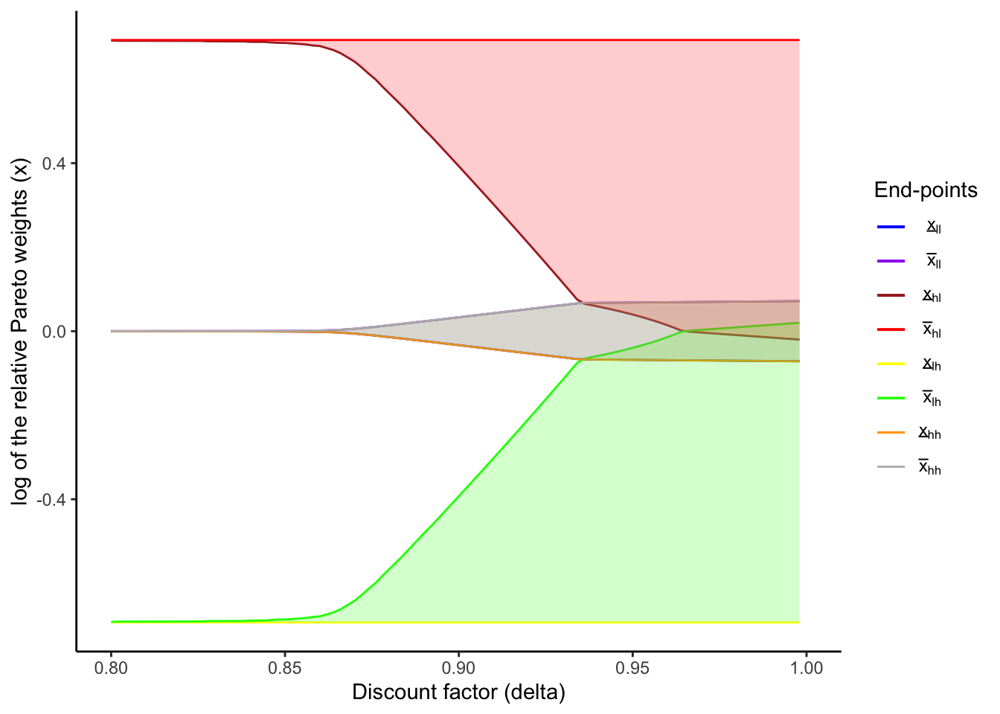

pacman::p_load(
tidyverse,
kableExtra,
latex2exp
)3 Risk sharing with limited commitoment: model
Here I demonstrate how to compute value functions and consumption under risk-sharing with limited commitment. First I show the risk-sharing model with limited commitment, and then I show the calculation of value functions.
3.1 Model
I consider constrained-efficient consumption allocations. The social planner solves the following problem:
\begin{align*} &\max_{\{c_{it}(s^t)\}} \sum_i \lambda_i \sum_{t = 1}^{\infty} \sum_{s^t} \delta^t \pi(s^t) u(c_{it}(s^t)) \\ \text{subject to} &\sum_i c_{it} (s^t) \le \sum_i y_{it}(s_t) \quad \forall s^t, \forall t \\ &\sum_{r = t}^{\infty} \sum_{s^r} \delta^{r - t} \pi(s^r | s^t) u(c_{ir}(s^r)) \ge U_{i}^{aut}(s_t) \quad \forall s^t, \forall t, \forall i. \end{align*}Here, the income follows a Markov process and is independent across households. Notice the difference between the history of states up to period t (s^t) and the state at period t (s_t). The variable \lambda_i is the Pareto weight of a household i. The last equation is the participation constraints (PCs), whose RHS is the value of autarky and the solution of the following Bellman equation:
U_i^{aut}(s_t) = u((1 - \phi) y_{it}(s_t)) + \delta \sum_{s^{t + 1}} \pi(s_{t + 1} | s_t) U_{i}^{aut}(s_{t + 1}), where \phi is the punishment of renege, which is a fraction of consumption each period. It is assumed that savings are absent.
Letting the multiplier on the PC of i be \delta^t \pi(s^t) \mu_i(s^t) and the multiplier on the aggregate resource constraint be \delta^t \pi(s^t) \rho(s^t), the Lagrangian is
\sum_{t = 1}^{\infty} \sum_{s^t} \delta^t \pi(s^t) \left\{ \sum_i \left[ \lambda_i u_i(c_{it}(s^t)) + \mu_i(s^t) \left( \sum_{r = t}^{\infty} \sum_{s^r} \delta^{r - t} \pi(s^r | s^t) u_i (c_{ir} (s^r)) - U_i^{aut}(s_t) \right) \right] + \rho(s^t) \left( \sum_i \left(y_{it} (s_t) - c_{it} (s^t) \right) \right) \right\} With the recursive method in Marcet and Marimon (2019), this Lagrangian can be written as
\sum_{t = 1}^{\infty} \sum_{s^t} \delta^t \pi(s^t) \left\{ \sum_i \left[ M_i (s^{t - 1}) u_i (c_{it} (s^t)) + \mu_i (s^t) (u_i (c_{it} (s^t)) - U_i^{aut} (s_t)) \right] + \rho(s^t) \left( \sum_i \left( y_{it}(s_t) - c_{it} (s^t) \right) \right) \right\},
where M_i(s^t) = M_i(s^{t - 1}) + \mu_i(s^t) and M_i(s^0) = \lambda. The variable M_i(s^t) is the current Pareto weight of household i and is equal to its initial Pareto weight plus the sum of the Lagrange mulipliers on its PCs along the history s^t.
From the Lagrangian, the optimality condition is u_i'(c_{it}(s^t)) M_i(s^t) = \frac{\rho(s^t)}{\delta^t \pi(s^t)}, and thus, for two households i and j (i \ne j), u_i'(c_{it}(s^t)) M_i(s^t) = u_j'(c_{jt}(s^t)) M_j(s^t). Taking logarithms and summing over households j, I get \begin{aligned} \log \left(u'(c_{it}(s^t)) \right) + \log \left(M_i(s^t) \right) = \frac{1}{N} \sum_j \log \left(u'(c_{jt}(s^t)) \right) + \frac{1}{N} \sum_j \log \left(M_j(s^t) \right). \end{aligned} Defining the village consumption c_{vt} such that \log \left(u'(c_{vt}(s^t)) \right) = \frac{1}{N} \sum_j \log \left(u'(c_{jt}(s^t)) \right) and M_v(s^t) such that \log \left( M_v(s^t) \right) = \frac{1}{N} \sum_j \log \left(M_j(s^t) \right), I obtain \begin{aligned} \log \left(u'('c_{it}(s^t)) \right) + \log \left(M_i(s^t) \right) &= \log \left(u'(c_{vt}(s^t)) \right) + \log \left( M_v(s^t) \right) \\ \Leftrightarrow \frac{u'(c_{vt}(s^t))}{u'(c_{it}(s^t))} = \frac{M_i(s^t)}{M_v(s^t)} \end{aligned} Note that this is equivalent to the optimality condition that the ratio of marginal utilities between two “households”, i and v, equals the ratio of their Pareto weights. Therefore, when I consider the one-versus-rest risk-sharing, I can use this optimality condition as if the village is one household.
Let x_i(s^t) = \frac{M_i(s^t)}{M_v(s^t)}, the relative Pareto weight of household i under the history s^t. Then, the vector of relative weights x(s^t) plays as a role as a co-state variable, and the solution consists of policy functions x_{it}(s_t, x_{t - 1}) and c_{it}(s_t, x_{t - 1}). That is, x_{t - 1} is a sufficient statistic for the history up to t - 1. The optimality condition is
\frac{u_v'(c_{vt}(s_t, x_{t - 1}))}{u_i'(c_{it}(s_t, x_{t - 1}))} = x_{it}(s_t, x_{t - 1}) \quad \forall i.
The value functioon can be written recursively as
V_i(s_t, x_{t - 1}) = u_i (c_{it} (s_t, x_{t - 1})) + \delta \sum_{s_{t + 1}} \pi(s_{t + 1} | s_t) V_i (s_{t + 1}, x_t(s_t, x_{t - 1})).
The evolution of relative Pareto weights is fully characterized by state-dependent intervals, which give the weights in the case where PCs are binding (Ligon, Thomas, and Worrall (2002)).
3.2 Code
3.2.1 Utility functions
calculateUtility <- function(cons, sigma) {
if (sigma != 1) {
utility = (cons^(1 - sigma) - 1) / (1 - sigma)
} else if (sigma == 1) {
utility = log(cons)
}
return(utility)
}
calculateMarginalUtility <- function(cons, sigma) cons^(- sigma)3.2.2 Value under autarky
calculateAutarkyValue <- function(
incomeGridPoints,
sigma,
delta,
punishment,
incomeTransitionMatrix
) {
autarkyValue <- numeric(length = length(incomeGridPoints))
i <- 1
diff <- 1
while (diff > 1e-12) {
autarkyValueNew <- (
calculateUtility(incomeGridPoints * (1 - punishment), sigma)
+ delta * incomeTransitionMatrix %*% autarkyValue
)
diff <- max(abs(autarkyValueNew - autarkyValue))
autarkyValue <- autarkyValueNew
i <- i + 1
}
return(autarkyValue)
}3.2.3 Create grid of relative Pareto weights
Here, I make the grid of relative Pareto weight of household 1, x(s^t), on which I compute the values (I use the notation x(s^t) rather than x_i(s^t) since there are only two households).
getRelativeParetoWeightsGridPoints <- function(
sigma,
punishment,
householdIncomeGridPoints,
villageIncomeGridPoints,
numRelativeParetoWeights
) {
minRelativeParetoWeights <- (
calculateMarginalUtility(max(villageIncomeGridPoints), sigma)
/ calculateMarginalUtility(min(householdIncomeGridPoints * (1 - punishment)), sigma)
)
maxRelativeParetoWeights <- (
calculateMarginalUtility(min(villageIncomeGridPoints * (1 - punishment)), sigma)
/ calculateMarginalUtility(max(householdIncomeGridPoints), sigma)
)
relativeParetoWeightsGridPoints <- exp(
seq(
log(minRelativeParetoWeights),
log(maxRelativeParetoWeights),
length.out = numRelativeParetoWeights)
)
return(relativeParetoWeightsGridPoints)
}3.2.4 Calculate consumption on the grid points
Then, I compute consumptions of the household 1 on these grid points. From the optimality condition and the CRRA utility functions, we obtain
c_{1t} = \frac{y_{1t} + y_{2t}}{1 + x_t^{- 1 / \sigma}}.
calculateHouseholdConsumption <- function(
aggregateIncome,
relativeParetoWeight,
numHouseholds,
sigma
) {
aggregateIncome / (1 + (numHouseholds - 1) * (relativeParetoWeight^(- 1 / sigma)))
}3.2.5 Caclulate values under full risk-sharing
Now, I compute the values under full risk-sharing, which will be used as the initial values in value function iterations under the limited commitment model. Note that, under full risk sharing, the consumption only depends on the aggregate resources and time-invariate relative Pareto weights. Hence, I numerically solve the following Bellman equation:
V_i^{full}(s_t, x) = u_i(c_{it}(s_t, x)) + \delta \sum_{s^{t + 1}} \pi(s_{t + 1} | s_t) V_{i}^{full}(s_{t + 1}, x).
calculateValueFullRiskSharing <- function(
incomeTransitionMatrix,
aggregateIncomeGridPoints,
delta,
sigma,
autarkyValueMatrix,
consumptionOnRelativeParetoWeightGrid,
numRelativeParetoWeights,
numHouseholds
) {
# Initial guess is expected utilities under autarky
householdValueFullRiskSharing <- outer(
autarkyValueMatrix[, 1], rep(1, numRelativeParetoWeights)
)
villageValueFullRiskSharing <- outer(
autarkyValueMatrix[, 2], rep(1, numRelativeParetoWeights)
)
iteration <- 1
diff <- 1
while (diff > 1e-10 & iteration < 500) {
householdValueFullRiskSharingNew <- (
calculateUtility(consumptionOnRelativeParetoWeightGrid, sigma)
+ delta * incomeTransitionMatrix %*% householdValueFullRiskSharing
)
villageValueFullRiskSharingNew <- (
calculateUtility(
(aggregateIncomeGridPoints - consumptionOnRelativeParetoWeightGrid) / (numHouseholds - 1),
sigma
)
+ delta * incomeTransitionMatrix %*% villageValueFullRiskSharing
)
diff <- max(
max(abs(householdValueFullRiskSharing - householdValueFullRiskSharingNew)),
max(abs(villageValueFullRiskSharing - villageValueFullRiskSharingNew))
)
householdValueFullRiskSharing <- householdValueFullRiskSharingNew
villageValueFullRiskSharing <- villageValueFullRiskSharingNew
iteration <- iteration + 1
}
return(list(
householdValueFullRiskSharing = householdValueFullRiskSharing,
villageValueFullRiskSharing = villageValueFullRiskSharing
))
}3.2.6 Calculate values under risk-sharing with limited commitment
Next, I derive the state-dependent intervals of relative Pareto weights and calculate values under the model of limited commitment. To derive the intervals, I use the fact that at the limits of the intervals, the PCs are binding. For instance, to compute the lower limit \underline{x}^h(s), where h indicates h’th iteration, the PC of the household 1 is binding:
u_1(c_1^h(s)) + \delta \sum_{s'} \pi(s' | s) V_1^{h - i} (s', \underline{x}^h(s)) = U_1^{aut}(s), where the optimality condition is
\frac{u_2'(c_{2}^h(s))}{u_1'(c_{1}^h(s))} = \underline{x}^h(s).
Notice that, once the PC binds, the past history, which is summarized by x_{t - 1}, does not matter. This property is called “amnesia” (Kocherlakota (1996)) or “forgiveness” (Ligon, Thomas, and Worrall (2002)). Since \underline{x}^h(s) may not be on the grid q, linear interpolation is used to compute V_1^{h - 1}(s', \underline{x}^h(s)).
Similarly, \overline{x}^h(s) is computed using the binding PC of the household 2
u_2(c_2^h(s)) + \delta \sum_{s'} \pi(s' | s) V_2^{h - i} (s', \overline{x}^h(s)) = U_2^{aut}(s), where the optimality condition is
\frac{u_2'(c_{2}^h(s))}{u_1'(c_{1}^h(s))} = \overline{x}^h(s).
After deriving these limits of intervals,
- for relative Pareto weights below \underline{x}^h(s), compute consumption of HH1 based on \underline{x}^h(s) and let its value be U_1^{aut};
- for relative Pareto weights above \overline{x}^h(s), compute consumption of HH1 based on \overline{x}^h(s) and let the value of HH2 be U_2^{aut};
- for other relative Pareto weights, use them to compute consumption of HH1 and the values of households.
By iterating these steps, we can calculate the value functions of households and limits of intervals.
interpolateValueFunction <- function(
relativeParetoWeight,
relativeParetoWeightsGridPoints,
valueFunctionMatrix
) {
apply(
valueFunctionMatrix,
1,
function(x) {
approx(
relativeParetoWeightsGridPoints,
x,
relativeParetoWeight,
rule = 2
)$y
}
)
}
calculateDiffLCRiskSharingAndAutarky <- function(
relativeParetoWeight,
relativeParetoWeightsGridPoints,
delta,
sigma,
aggregateIncome,
householdValueLCRiskSharing,
villageValueLCRiskSharing,
incomeTransitionProbVec,
householdAutarkyValue,
villageAutarkyValue,
numHouseholds
) {
householdConsumption <- calculateHouseholdConsumption(
aggregateIncome,
relativeParetoWeight,
numHouseholds,
sigma
)
householdValueLCRiskSharingAtRelativeParetoWeight <- interpolateValueFunction(
relativeParetoWeight,
relativeParetoWeightsGridPoints,
householdValueLCRiskSharing
)
villageValueLCRiskSharingAtRelativeParetoWeight <- interpolateValueFunction(
relativeParetoWeight,
relativeParetoWeightsGridPoints,
villageValueLCRiskSharing
)
householdDiffLCRiskSharingAndAutarky <- (
calculateUtility(householdConsumption, sigma)
+ delta * incomeTransitionProbVec %*% householdValueLCRiskSharingAtRelativeParetoWeight
- householdAutarkyValue
) %>% as.numeric
villageDiffLCRiskSharingAndAutarky <- (
calculateUtility((aggregateIncome - householdConsumption) / (numHouseholds - 1), sigma)
+ delta * incomeTransitionProbVec %*% villageValueLCRiskSharingAtRelativeParetoWeight
- villageAutarkyValue
) %>% as.numeric
return(list(
householdDiffLCRiskSharingAndAutarky = householdDiffLCRiskSharingAndAutarky,
villageDiffLCRiskSharingAndAutarky = villageDiffLCRiskSharingAndAutarky
))
}
getClosestGridIndex <- function(
point,
gridPoints
) {
closestGridIndex <- which.min(
abs(point - gridPoints)
)
if (
point
> gridPoints[closestGridIndex]
) {
closestGridIndex <- closestGridIndex + 1
}
return(closestGridIndex)
}
calculateValueLCRiskSharing <- function(
valueFullRiskSharing,
consumptionOnRelativeParetoWeightGrid,
aggregateIncomeGridPoints,
incomeTransitionMatrix,
autarkyValueMatrix,
relativeParetoWeightsGridPoints,
numRelativeParetoWeights,
delta,
sigma,
numIncomeStates,
numHouseholds,
iterationLimit,
diffLimit
) {
# Initial guess is expected utilities under full risk sharing
householdValueLCRiskSharing <- valueFullRiskSharing$householdValueFullRiskSharing
villageValueLCRiskSharing <- valueFullRiskSharing$villageValueFullRiskSharing
diff <- 1
iteration <- 1
while ((diff > diffLimit) && (iteration <= iterationLimit)) {
# First, ignore enforceability and just update the value functions
# using the values at the previous iteration
householdValueLCRiskSharingNew <- (
calculateUtility(consumptionOnRelativeParetoWeightGrid, sigma)
+ delta * incomeTransitionMatrix %*% householdValueLCRiskSharing
)
villageValueLCRiskSharingNew <- (
calculateUtility(
(aggregateIncomeGridPoints - consumptionOnRelativeParetoWeightGrid) / (numHouseholds - 1),
sigma
)
+ delta * incomeTransitionMatrix %*% villageValueLCRiskSharing
)
# Now check enforceability at each state
for (incomeStateIndex in seq(1, numIncomeStates)) {
householdAutarkyValue <- autarkyValueMatrix[incomeStateIndex, 1]
villageAutarkyValue <- autarkyValueMatrix[incomeStateIndex, 2]
if (any(householdValueLCRiskSharingNew[incomeStateIndex, ] <= householdAutarkyValue)) {
villageValueLCRiskSharingNew[
incomeStateIndex,
householdValueLCRiskSharingNew[incomeStateIndex, ] <= householdAutarkyValue
] <- villageValueLCRiskSharingNew[
incomeStateIndex,
householdValueLCRiskSharingNew[incomeStateIndex, ] <= householdAutarkyValue
] %>% min
householdValueLCRiskSharingNew[
incomeStateIndex,
householdValueLCRiskSharingNew[incomeStateIndex, ] <= householdAutarkyValue
] <- householdAutarkyValue
}
if (any(villageValueLCRiskSharingNew[incomeStateIndex, ] <= villageAutarkyValue)) {
householdValueLCRiskSharingNew[
incomeStateIndex,
villageValueLCRiskSharingNew[incomeStateIndex, ] <= villageAutarkyValue
] <- householdValueLCRiskSharingNew[
incomeStateIndex,
villageValueLCRiskSharingNew[incomeStateIndex, ] <= villageAutarkyValue
] %>% min
villageValueLCRiskSharingNew[
incomeStateIndex,
villageValueLCRiskSharingNew[incomeStateIndex, ] <= villageAutarkyValue
] <- villageAutarkyValue
}
}
diff <- max(
max(abs(householdValueLCRiskSharingNew - householdValueLCRiskSharing)),
max(abs(villageValueLCRiskSharingNew - villageValueLCRiskSharing))
)
householdValueLCRiskSharing <- householdValueLCRiskSharingNew
villageValueLCRiskSharing <- villageValueLCRiskSharingNew
iteration <- iteration + 1
}
relativeParetoWeightBounds <- matrix(NA, nrow = numIncomeStates, ncol = 2)
for (incomeStateIndex in seq(1, numIncomeStates)) {
aggregateIncome <- aggregateIncomeGridPoints[incomeStateIndex]
incomeTransitionProbVec <- incomeTransitionMatrix[incomeStateIndex,]
householdAutarkyValue <- autarkyValueMatrix[incomeStateIndex, 1]
villageAutarkyValue <- autarkyValueMatrix[incomeStateIndex, 2]
if (
calculateDiffLCRiskSharingAndAutarky(
min(relativeParetoWeightsGridPoints),
relativeParetoWeightsGridPoints,
delta,
sigma,
aggregateIncome,
householdValueLCRiskSharing,
villageValueLCRiskSharing,
incomeTransitionProbVec,
householdAutarkyValue,
villageAutarkyValue,
numHouseholds
)$householdDiffLCRiskSharingAndAutarky < 0) {
relativeParetoWeightLowerBound <- uniroot(
function(x) {calculateDiffLCRiskSharingAndAutarky(
x,
relativeParetoWeightsGridPoints,
delta,
sigma,
aggregateIncome,
householdValueLCRiskSharing,
villageValueLCRiskSharing,
incomeTransitionProbVec,
householdAutarkyValue,
villageAutarkyValue,
numHouseholds
)$householdDiffLCRiskSharingAndAutarky},
c(min(relativeParetoWeightsGridPoints), max(relativeParetoWeightsGridPoints)),
tol = 1e-10,
maxiter = 300
)$root
} else {
relativeParetoWeightLowerBound <- min(relativeParetoWeightsGridPoints)
}
if (
calculateDiffLCRiskSharingAndAutarky(
max(relativeParetoWeightsGridPoints),
relativeParetoWeightsGridPoints,
delta,
sigma,
aggregateIncome,
householdValueLCRiskSharing,
villageValueLCRiskSharing,
incomeTransitionProbVec,
householdAutarkyValue,
villageAutarkyValue,
numHouseholds
)$villageDiffLCRiskSharingAndAutarky < 0) {
relativeParetoWeightUpperBound <- uniroot(
function(x) {calculateDiffLCRiskSharingAndAutarky(
x,
relativeParetoWeightsGridPoints,
delta,
sigma,
aggregateIncome,
householdValueLCRiskSharing,
villageValueLCRiskSharing,
incomeTransitionProbVec,
householdAutarkyValue,
villageAutarkyValue,
numHouseholds
)$villageDiffLCRiskSharingAndAutarky},
c(min(relativeParetoWeightsGridPoints), max(relativeParetoWeightsGridPoints)),
tol = 1e-10,
maxiter = 300
)$root
} else {
relativeParetoWeightUpperBound <- max(relativeParetoWeightsGridPoints)
}
relativeParetoWeightBounds[incomeStateIndex, 1] <- relativeParetoWeightLowerBound
relativeParetoWeightBounds[incomeStateIndex, 2] <- relativeParetoWeightUpperBound
}
if (iteration == iterationLimit) {
print("Reached the maximum limit of iterations!")
}
return(list(
householdValueLCRiskSharing = householdValueLCRiskSharing,
villageValueLCRiskSharing = villageValueLCRiskSharing,
relativeParetoWeightBounds = relativeParetoWeightBounds))
}solveLCRiskSharing <- function(
delta,
sigma,
punishment,
householdIncomeTransitionMatrix,
householdIncomeGridPoints,
villageIncomeTransitionMatrix,
villageIncomeGridPoints,
numIncomeStates,
numHouseholds,
numRelativeParetoWeights = 2000,
iterationLimit = 100,
diffLimit = 1e-8
){
incomeTransitionMatrix <- kronecker(
villageIncomeTransitionMatrix,
householdIncomeTransitionMatrix
)
incomeGridPointsMatrix <- as.matrix(expand.grid(
householdIncomeGridPoints, villageIncomeGridPoints
))
aggregateIncomeGridPoints <- (
incomeGridPointsMatrix[, 1] + incomeGridPointsMatrix[, 2] * (numHouseholds - 1)
)
autarkyValueMatrix <- expand.grid(
calculateAutarkyValue(
householdIncomeGridPoints,
sigma,
delta,
punishment,
householdIncomeTransitionMatrix
),
calculateAutarkyValue(
villageIncomeGridPoints,
sigma,
delta,
punishment,
villageIncomeTransitionMatrix
)
)
relativeParetoWeightsGridPoints <- getRelativeParetoWeightsGridPoints(
sigma,
punishment,
householdIncomeGridPoints,
villageIncomeGridPoints,
numRelativeParetoWeights
)
consumptionOnRelativeParetoWeightGrid <- matrix(
NA, nrow = numIncomeStates, ncol = numRelativeParetoWeights
)
for (incomeStateIndex in seq_along(aggregateIncomeGridPoints)) {
for (relativeParetoWeightIndex in seq_along(relativeParetoWeightsGridPoints)) {
consumptionOnRelativeParetoWeightGrid[
incomeStateIndex,
relativeParetoWeightIndex
] <- calculateHouseholdConsumption(
aggregateIncomeGridPoints[incomeStateIndex],
relativeParetoWeightsGridPoints[relativeParetoWeightIndex],
numHouseholds,
sigma
)
}
}
valueFullRiskSharing <- calculateValueFullRiskSharing(
incomeTransitionMatrix,
aggregateIncomeGridPoints,
delta,
sigma,
autarkyValueMatrix,
consumptionOnRelativeParetoWeightGrid,
numRelativeParetoWeights,
numHouseholds
)
valueLCRiskSharing <- calculateValueLCRiskSharing(
valueFullRiskSharing,
consumptionOnRelativeParetoWeightGrid,
aggregateIncomeGridPoints,
incomeTransitionMatrix,
autarkyValueMatrix,
relativeParetoWeightsGridPoints,
numRelativeParetoWeights,
delta,
sigma,
numIncomeStates,
numHouseholds,
iterationLimit,
diffLimit
)
return(valueLCRiskSharing)
}solveLCRiskSharingByVillage <- function(
village,
delta,
sigma,
punishment,
householdAR1EstimationResult,
villageAR1EstimationResult,
numIncomeStates,
numRelativeParetoWeights = 2000,
iterationLimit = 100,
diffLimit = 1e-8
) {
numHouseholds <- householdAR1EstimationResult[[village]]$numHouseholds
relativeParetoWeightBoundsArray <- array(
NA,
c(2, 2, numIncomeStates, 2)
)
for (meanClass in seq(1, 2)) {
for (CVClass in seq(1, 2)) {
householdIncomeTransitionMatrix <- (
householdAR1EstimationResult[[village]]$transitionMatrixArray[meanClass, CVClass, ,]
)
householdIncomeGridPoints <- (
householdAR1EstimationResult[[village]]$gridPointsArray[meanClass, CVClass,]
)
villageIncomeTransitionMatrix <- (
villageAR1EstimationResult[[village]]$transitionMatrix
)
villageIncomeGridPoints <- (
villageAR1EstimationResult[[village]]$gridPoints
)
relativeParetoWeightBoundsArray[meanClass, CVClass, ,] <- solveLCRiskSharing(
delta,
sigma,
punishment,
householdIncomeTransitionMatrix,
householdIncomeGridPoints,
villageIncomeTransitionMatrix,
villageIncomeGridPoints,
numIncomeStates,
numHouseholds,
numRelativeParetoWeights,
iterationLimit,
diffLimit
)$relativeParetoWeightBounds
}
}
return(relativeParetoWeightBoundsArray)
}save.image("IntermediateData/lc_hom_model_functions.RData")3.2.7 Sanity test: replication of Figure 1 in Ligon, Thomas, and Worrall (2002)
For the sanity test of this function, I use it to replicate the Figure 1 in Ligon, Thomas, and Worrall (2002). Here I use the parameter values in the original paper. I choose the income process (y_l, y_h) = (2/3, 4/3) and (p_l, p_h) = (0.1, 0.9) for both households so that the mean is 1 and the ratio y_l / y_h is 1/2 as in the paper. Also, the penalty under autarky is absent as in the original numerical exercise. Finally, I assume the CRRA utility functions:
u(c_{it}) = \frac{c_{it}^{1 - \sigma} - 1}{1 - \sigma}.
sigmaLTW <- 1.0
punishmentLTW <- 0.0
incomeTransitionMatrixLTW <- matrix(rep(c(0.1, 0.9), 2), nrow = 2, byrow = TRUE)
incomeGridPointsLTW <- c(2/3, 4/3)
numIncomeStatesLTW <- length(incomeGridPointsLTW) * length(incomeGridPointsLTW)
numHouseholdsLTW <- 2
deltaVec <- seq(0.8, 0.999, by = 0.002)LCRiskSharingResultLTW <- map(
deltaVec,
~ solveLCRiskSharing(
.,
sigmaLTW,
punishmentLTW,
incomeTransitionMatrixLTW,
incomeGridPointsLTW,
incomeTransitionMatrixLTW,
incomeGridPointsLTW,
numIncomeStatesLTW,
numHouseholdsLTW,
numRelativeParetoWeights = 10000,
iterationLimit = 1000,
diffLimit = 1e-8
)
)relativeParetoWeightBoundsArrayLTW = array(
NA,
dim = c(numIncomeStatesLTW, 2, length(deltaVec))
)
for (deltaIndex in seq_along(deltaVec)) {
relativeParetoWeightBoundsArrayLTW[,,deltaIndex] <- (
LCRiskSharingResultLTW[[deltaIndex]]$relativeParetoWeightBounds
)
}
ggplot() +
geom_line(aes(deltaVec, log(relativeParetoWeightBoundsArrayLTW[1,1,]), color = "a")) +
geom_line(aes(deltaVec, log(relativeParetoWeightBoundsArrayLTW[1,2,]), color = "b")) +
geom_line(aes(deltaVec, log(relativeParetoWeightBoundsArrayLTW[2,1,]), color = "c")) +
geom_line(aes(deltaVec, log(relativeParetoWeightBoundsArrayLTW[2,2,]), color = "d")) +
geom_line(aes(deltaVec, log(relativeParetoWeightBoundsArrayLTW[3,1,]), color = "e")) +
geom_line(aes(deltaVec, log(relativeParetoWeightBoundsArrayLTW[3,2,]), color = "f")) +
geom_line(aes(deltaVec, log(relativeParetoWeightBoundsArrayLTW[4,1,]), color = "g")) +
geom_line(aes(deltaVec, log(relativeParetoWeightBoundsArrayLTW[4,2,]), color = "h")) +
coord_cartesian(
xlim = c(0.8, 1.0),
ylim = c(
log(incomeGridPointsLTW[1] / incomeGridPointsLTW[2]),
log(incomeGridPointsLTW[2] / incomeGridPointsLTW[1])
)
) +
geom_ribbon(aes(x = deltaVec,
ymin = log(relativeParetoWeightBoundsArrayLTW[1,1,]),
ymax = log(relativeParetoWeightBoundsArrayLTW[1,2,])),
fill = "blue", alpha = 0.2) +
geom_ribbon(aes(x = deltaVec,
ymin = log(relativeParetoWeightBoundsArrayLTW[2,1,]),
ymax = log(relativeParetoWeightBoundsArrayLTW[2,2,])),
fill = "red", alpha = 0.2) +
geom_ribbon(aes(x = deltaVec,
ymin = log(relativeParetoWeightBoundsArrayLTW[3,1,]),
ymax = log(relativeParetoWeightBoundsArrayLTW[3,2,])),
fill = "green", alpha = 0.2) +
geom_ribbon(aes(x = deltaVec,
ymin = log(relativeParetoWeightBoundsArrayLTW[4,1,]),
ymax = log(relativeParetoWeightBoundsArrayLTW[4,2,])),
fill = "yellow", alpha = 0.2) +
scale_color_manual(
name = "End-points",
values = c(
"blue",
"purple",
"brown",
"red",
"yellow",
"green",
"orange",
"gray"
),
labels = unname(TeX(c(
"$\\underline{x}_{ll}$",
"$\\bar{x}_{ll}$",
"$\\underline{x}_{hl}$",
"$\\bar{x}_{hl}$",
"$\\underline{x}_{lh}$",
"$\\bar{x}_{lh}$",
"$\\underline{x}_{hh}$",
"$\\bar{x}_{hh}$"
)))
) +
xlab("Discount factor (delta)") +
ylab("log of the relative Pareto weights (x)") +
theme_classic()
Kocherlakota, N. R. 1996. “Implications of Efficient Risk Sharing without Commitment.” The Review of Economic Studies 63 (4): 595–609. https://doi.org/10.2307/2297795.
Ligon, Ethan, Jonathan P. Thomas, and Tim Worrall. 2002. “Informal Insurance Arrangements with Limited Commitment: Theory and Evidence from Village Economies.” Review of Economic Studies 69 (1): 209–44. https://doi.org/10.1111/1467-937X.00204.
Marcet, Albert, and Ramon Marimon. 2019. “Recursive Contracts.” Econometrica 87 (5): 1589–1631.